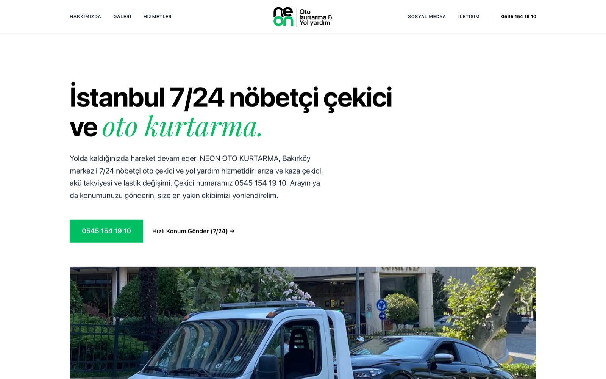
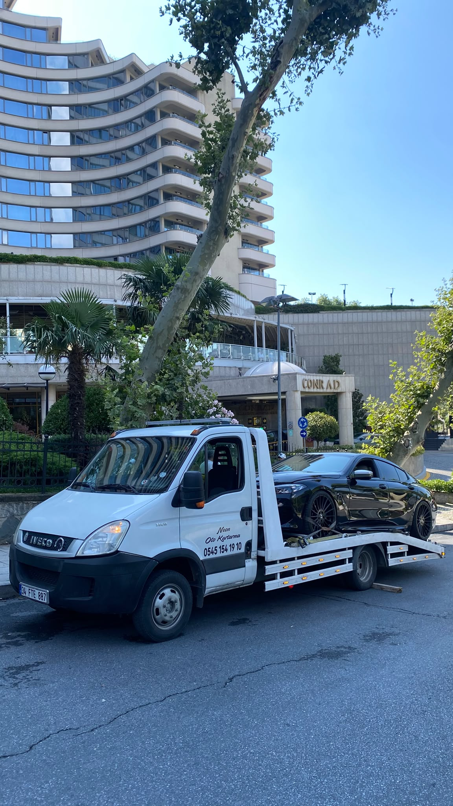
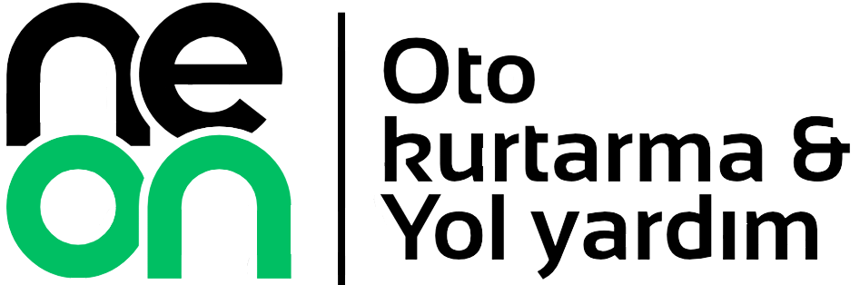

Stuck
on the road?
Istanbul's 24/7
tow truck
and
roadside recovery.
neonotokurtarma.com

24/7 TOWING LINE
0545 154 19 10
Always
by your side
Breakdown and accident towing
Battery jump-start
Tyre change
Flatbed / crane
VIP transfer

Based in
Bakırköy.
24/7 roadside assistance on Istanbul's European side

neonotokurtarma.com
0545 154 19 10